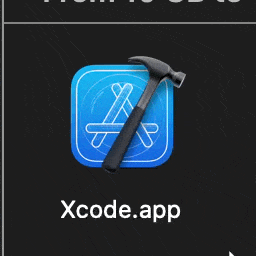

Adding weight to drag and drop to macOS Finder
I made Dragula, a highly experimental extension to macOS that adds weight to one of the oldest user interface interactions ever: The Finder’s drag-and-drop interaction.
In the world of Dragula, when you drag a file (or files), you will find it easier if the files are smaller in size, and harder if they are larger in size. A small GIF is easy to drag; you can likely move one across the screen while barely moving your mouse. But you might find it nigh impossible to move a large file, like a movie or the Xcode IDE.
Indeed, in the world of Dragula, every drag-and-drop interaction involving files is weighted: individual files, folders, and even Finder windows.
You can view the source code, or read on below to see why I did this and how I did it.
The unbearable weightlessness of drag-and-drop
Drag-and-drop has been a mainstay of personal computing since it first showed up in the first Macintosh. It’s easy to see why: We drag things around a lot in real life! Direct manipulation is incredibly powerful and intuitive. It’s so intuitive that there’s evidence we spend more effort to move digital things that represent heavy real-life things. Despite our world becoming more virtual, drag-and-drop is arguably the most powerful interaction it has ever been.
And yet, every drag-and-drop interaction is designed to feel the same, no matter what you’re dragging. That made me curious: I wanted to play around with the conventions of drag and drop a little bit and I wanted to see what that would feel like. Differentiating drag and drop based on file size seemed like a great first step.
(plus, I thought it would be silly)
“But Xcode’s heavier than emojis!” With apologies to Limmy.
First sketches
From the get-go, my initial idea was to use macOS’ accessibility APIs. In summary, accessiblity APIs are ways for assistive technologies, such as screen readers or adaptive controllers, to read what’s on the screen, know when the user interacts, and perform actions on behalf of the user. These APIs are key to implementing accessible alternatives to a mouse, keyboard, or display, but they are also used by utilities that augment the macOS user interface. For example, Rectangle uses the accessibility API to implement window “snapping” by reading your mouse position while dragging a window, and then to resize the window itself.
My initial idea followed from my experiences using Rectangle. When the user starts dragging a file, I would draw a fake proxy file on top of the icon. Then I could control the dragging interaction any way I wanted, since I would basically “steal” whatever was on Finder. (In retrospect, this seems a lot like the type of solution a React engineer would immediately reach for, doesn’t it?)
As I was bouncing this idea around the Recurse Center for a few weeks, we converged on a much simpler idea: Read the file size of whatever I was dragging, and then change the pointer speed as some factor of the file size. Not only was this much simpler, I knew it was workable because I knew of software that did this! Logi Options+ is an example of software that allow you to configure pointer speed via their UI and even remap the behavior of buttons. Once I could fit the pieces into my head, I felt motivated to implement it. My new game plan was as follows:
- Intercept mouse events for file drag and drop
- Use the Accessibility APIs to read the selection
- Change the mouse sensitivity based on your selection
Starting with dessert: Implementing mouse sensitivity changing
I woke up bright and early (10am, I think) on a Monday, ready to get started. Because I was supposed to learn Rust, I only wanted to spend a week on this, so I set a goal to have a workable prototype that I could demo on the Thursday of the same week. For those of you counting, that’s four days.
There was one hitch: I didn’t really know how to use Swift, the preferred language for interfacing with the foundational APIs of macOS, including the Accessibility API and the input device API I wanted to use. Web searches on Google seemed pretty dire, surfacing only the official API documentation, which was very inaccessible, especially for an accessibility library.
So I changed my search strategy: I looked up “macos open source mouse drivers” and hoped that I would find something. And then I found LinearMouse, a really great mouse driver utility. Best of all, they had wrapped the input device code inside an easy-to-use library that was also easy to move to my project. And it worked for every pointing device, not just one manufacturer’s product. Beautiful!
I found it really useful to start small. Once I had a sample app running with the pointer library, then I just tried changing it programmatically inside the code itself. Then I added the first bits of drag and drop, using code from Rectangle as reference. I also found it strangely useful to tackle things peripheral to the core functionality, such as the prompts to ask the user to enable accessibility permissions. But a day and a half in, and I still had not figured out how to actually read the Finder selection.
Go off, (Apple)Script
AppleScript is an automation scripting language for macOS. It has been part of the platform for a while, so it’s rather capable. For example, you can do this to get the Finder selection:
tell application "Finder" to get the selection
{application file "Xcode.app" of folder "Applications" of startup disk
of application "Finder", application file "Visual Studio Code.app" of folder "Applications"
of startup disk of application "Finder"}
You know, there was a world where everything looked like AppleScript. I think that world would have been kind of cool. But I didn’t know what to do with this. I was used to standard POSIX paths and C-style imperative programming, and so was everyone else. And documentation was very scant.
I decided to use AppleScript to get the selection size directly. For those frantically searching, human or computer, here’s the code to do that that will return the selection size in bytes, including zero if there is no selection:
set theSize to 0
tell application "Finder"
set theSelection to the selection as alias list
repeat with theItem in theSelection
set theInfo to (info for theItem)
set theSize to theSize + (size of theInfo)
end repeat
end tell
return theSize
Spoiler alert: This is, however, not the code I actually ended up using. More on that later.
To call AppleScript within my code, I wanted to use NSAppleScript but
couldn’t
figure out how to make that work. Instead, I shell out to osascript and read the output from the
command
line. yeah.
Getting ahead of myself
The code that intercepts pointer actions is called an EventTap. It is essentially a global event
handler. Those interested should mosey on over to the source code, because the full details are a little
hairy for a blog post, but basically I could take my script code above, read the result, and then normalize it
into
a pointer resolution. Here’s the code that normalizes, by the way:
extension Double {
func toNormalizedResolutionValue() -> Double {
let slope = (1995.0/1242850962)
return self * slope + 75
}
}
It’s probably bad practice to attach this functionality to Double itself, but I thought
that was fun.
But, I was running into a curious issue: The AppleScript took the value of the last selection I had,
not
the current one! So if I selected Xcode.app and then selected Visual Studio Code.app,
it was taking the size of Xcode.app when I was dragging Visual Studio Code.app.
Remember when I told you that the EventTap intercepts pointer actions? As it turns out,
my
event handler
ran before the event had propagated to Finder and so it was reading the selection before the selection
updated.
I solved this by getting the selection contents directly using the accessibility APIs (by checking for the
presence of the url attribute on the element):
if !isMultiSelecting && element.getValue(.filename) is NSString,
let url = element.getValue(.url) as? URL {
// ...
}
(shoutout to Swift's if-statements separated by commas and if-let syntax! i think Swift is such a neat language!)
But then I was finding it still
too slow, especially
for directories, and
macOS does not like it when your event taps take too slow, since they block I/O. So I learned I had
to defer some operations to a
background thread using
DispatchQueue.global, and while not particularly thread-safe, this wasn’t really a concern of
this
code.
Multi-select
At this point, I was ready to demo Dragula to the Recurse Center. I got a lot of enthusiastic feedback and
was ready to work on all of the features that would really put a bow on top of what I got. Unfortunately,
at this point, I had really ripped my hair out learning all the vagaries of macOS programming: the inconsistent
documentation and Xcode itself. I was ready to drag Xcode straight to the trash.

... Oh, right. Well, perhaps throwing things away is a drastic action. Instead I slept on it for a week, and after doing other stuff I dove back into it and implemented multi-select.
Remember when I said I ended up doing things differently? I found that in order to handle multiple selection it was important for me to synchronize the selection from Finder instead of reading it directly each time. That way I could compare selections to see if they had changed (when you drag, you always drag on a file handle, no matter how large the selction, so I had to keep track of whether or not I was dragging just one file or multiple.) Here is the code to retrieve all the paths in the selection, in POSIX format, separated by colons:
set thePaths to ""
tell application "Finder"
set theSelection to the selection as alias list
repeat with theItem in theSelection
set thePaths to thePaths & POSIX path of theItem & ":"
end repeat
return thePaths
end tell
Conclusion: Don’t be a drag, just be a queen
I had a lot of fun working on this project. It’s been the highlight of the Recurse Center for me so far. I didn’t know any Swift, a lot of the people I paired with didn’t know any Swift, and I was able to get this up and running in less than a week. It was the most useless software I ever wrote.
Sometimes I have Dragula enabled, and drag a small text file, and it flies across the screen. And I haven’t stopped smiling at that.
How is it like to use Dragula? Install it yourself and find out. Maybe install it on a friend’s computer to prank them. But my hope is that at least one soul pokes around and learns how they can use the APIs I used to control computers in new, unexpected, fun ways.